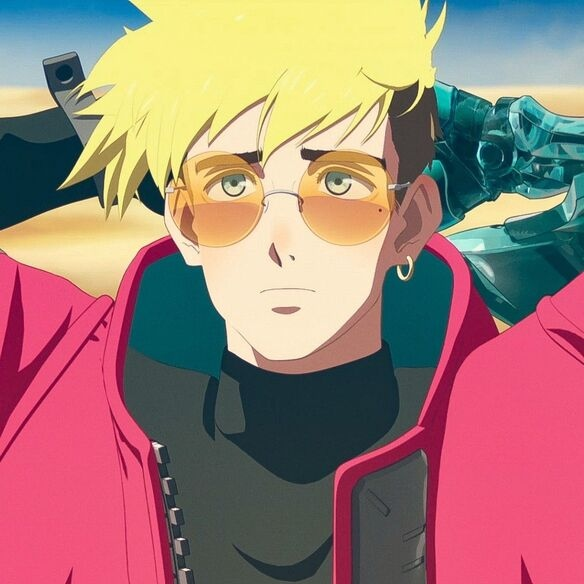

Whomst?
This is Vash. Or Vash the Stampede. Or the Humanoid Typhoon. IDK why they gave him so many names sorry. Vash is not human, he is... a plant. No, I'm not joking. He's a plant. This boy is so pathetic, it's hilarious. But he can also be cool at times too. He is also extremely selfless, he has a lot of scars all over his body from helping others and quite literally getting thrown around or shot at. He also makes a lot of little sounds in the English dub of the anime and it's so funny and so cute I love him. He loves donuts.
Each plant generates something, whether it be electricity, water, amino acids, literally anything. But Vash can't generate anything. He just eats, drinks, and sleeps like a normal human. He eventually learns that he can be a sort of doctor, or counselor for plants, since he can communicate with them unlike humans. After his brother cuts off his arm though in a fight, Vash travels around the world to go around helping others.